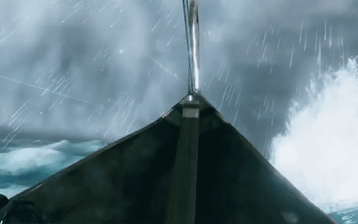
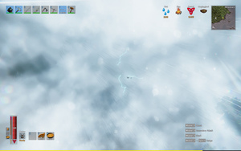

索尔
本地离线版支持中英文站内搜索。带 ↗ 的链接需联网；中文采用用户词表，各页来源版本见页脚。


索尔是雷暴中随机触发的事件，乘两山羊坦格里斯尼尔和坦格乔斯特拉的战车横穿天空，发蓝闪电。击败冰霜龙母后，雷暴中50%概率出现索尔。纯客户端事件，每次仅一玩家可见。


说明
- 用fly命令可发现，此实体其实仅是一辆车和两只静止鹿！
趣闻
- 北欧神话中，索尔也称多纳尔、苏诺尔、苏纳尔等，是闪电、雷鸣、风暴、力量、祝圣、生育、圣林与树木，以及人类保护之神。
Thor is an event that is randomly triggered during thunderstorms. He appears flying across the sky in a chariot being pulled by his two goats Tanngrisnir and Tanngnjóstr, emitting blue lightning. Thor has a 50% chance to appear in thunderstorms once Moder has been defeated. He is a purely clientside event and can only be seen by one player at a time.
Notes
- Using the console command "fly", players may discover that this entity is merely a cart and two static deer!
Trivia
- In Nordic mythology, Thor (also known as Donar, Thunor, Thuner, and Thunar) is the god of lightning, thunder, storms, strength, hallowing, fertility, sacred groves and trees, and the protection of mankind.